TOF Lab Report
Objective
The purpose of this lab is to equip the robot with distance sensors - the faster the robot can sample and the more it can trust a sensor reading, the faster it is able to drive.
Prelab
Setting up TOF
In this lab, we will set up a Time-of-Flight (ToF) sensor, which is based on the VL53L1X. Each by default has the same address, so I wired the X shut pin to the Artemis board on one TOF, allowing me to manually change the second sensor's address. This is more efficient than continuously enable/disabling the two sensors separately as it allows for continuous data collection from both sensors. In order to detect obstacles, I will place a TOF sensor on the front of the car and on the right side. There will be blindspots on the left and in the back, however, this should be enough to allow the car to perform stunts. I used the longer wires to connect my TOF to the Arduino since the Arduino will be placed closer to the back of the car.
Wiring Diagram:
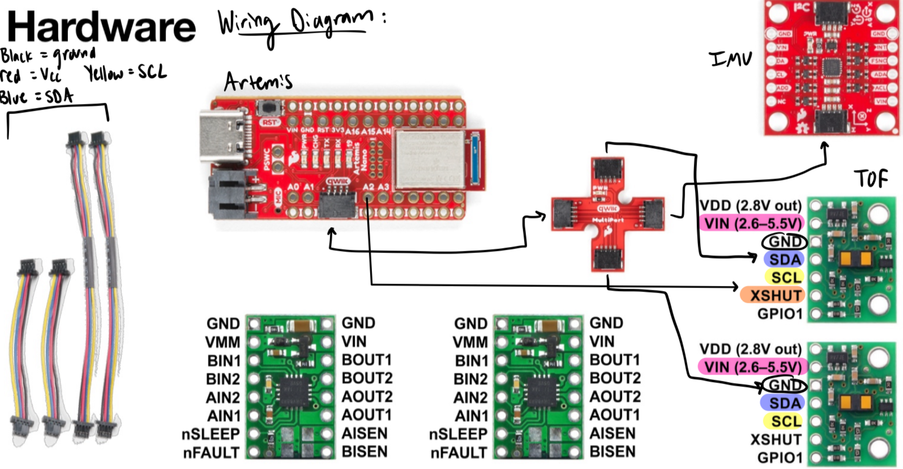Physical Circuit:

Scanning for i2c:

Lab Tasks
1. Attached a JST to a battery to power the Artemis
Connected Battery:

2. Setup TOF
Installed the SparkFun VL53L1X 4m laser distance sensor library and Connected the QWIIC break-out board to the Artemis, then soldered QWIIC cables to each TOF sensor. I scanned the I2C channel to find the sensors. The first default address is in the i2c image above, and represents the number 84 but bit shifted. I set the distance mode of my sensors to short. The pros/cons of each mode is that it will be most accurate in the range it is set to. In this scenario, the car needs to know accurately what is right by it to navigate sucessfully, hence the choice of short mode. QWIIC wiring: Red= Vcc, Black = Ground, Blue= SDA, Yellow= SCL
TOF Wiring:
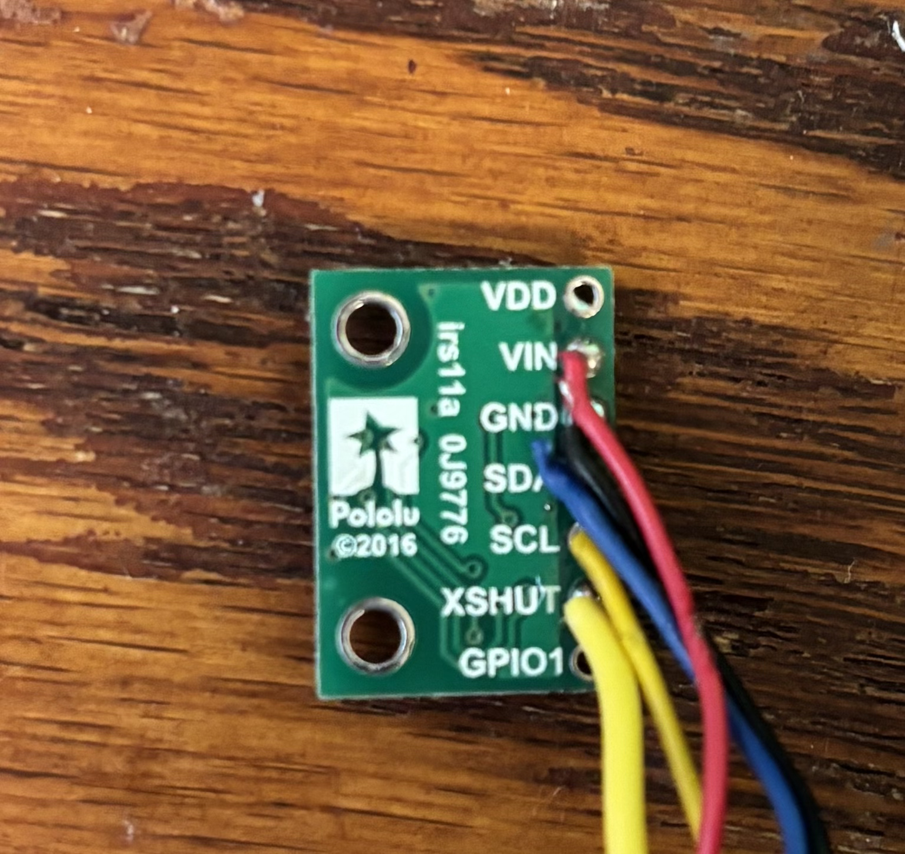Code to change the second TOF address:
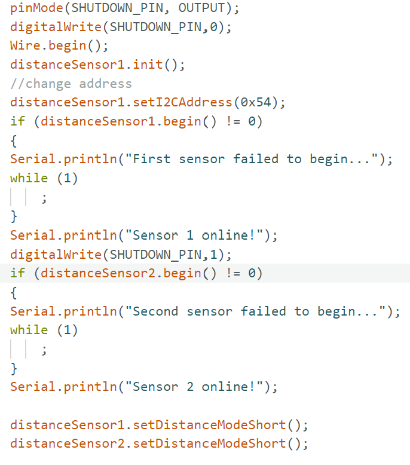3. Test TOF
I tested my chosen mode by setting up my TOF sensors and collected data at 2, 5, 10, 20, 30, 40, 50, 60, 70, 80, 90, and 100cm. I collected 100 data points for each measurement. I added code to the main ble script to take both sensor readings and send it to python. In python, I calculated the average and standard deviation for each data point and created plots.
Data collection in Arduino:
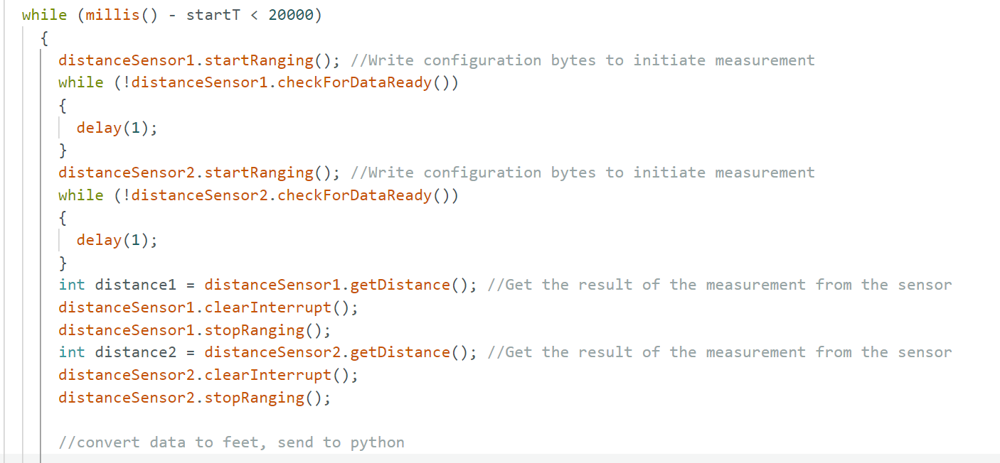Data math in python done for each data group (in mm):
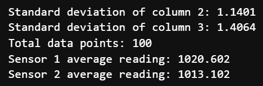Full Data (in mm):
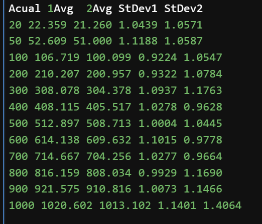Actual Distance vs Recorded Measurement Graph:
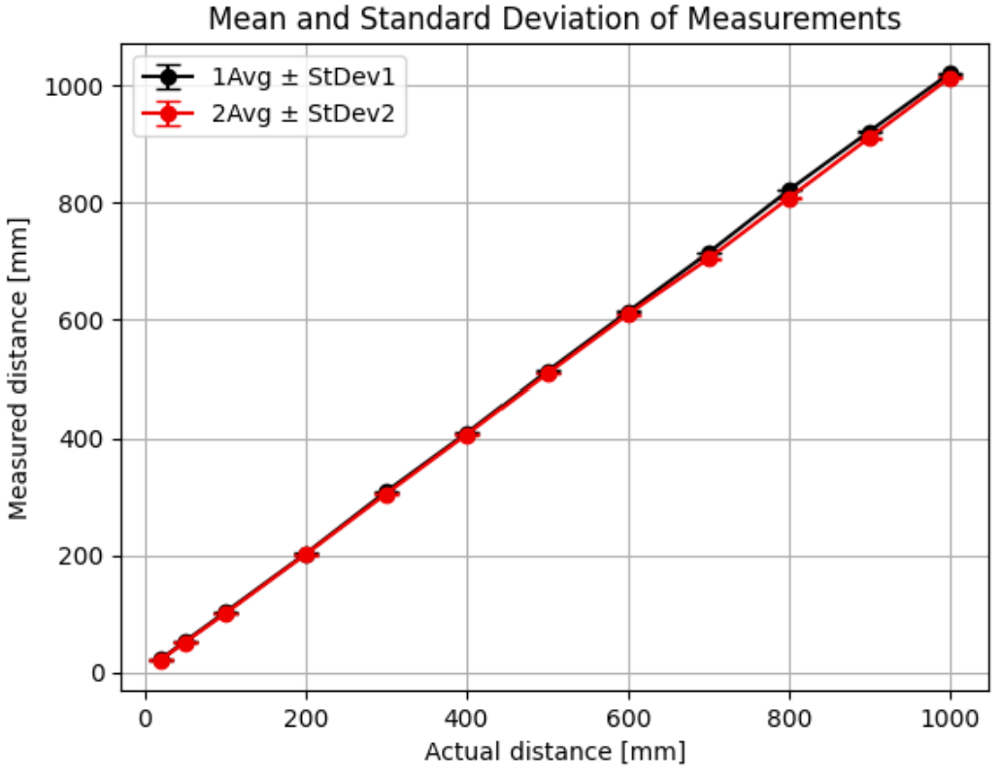StDev vs Actual Distance Graph:
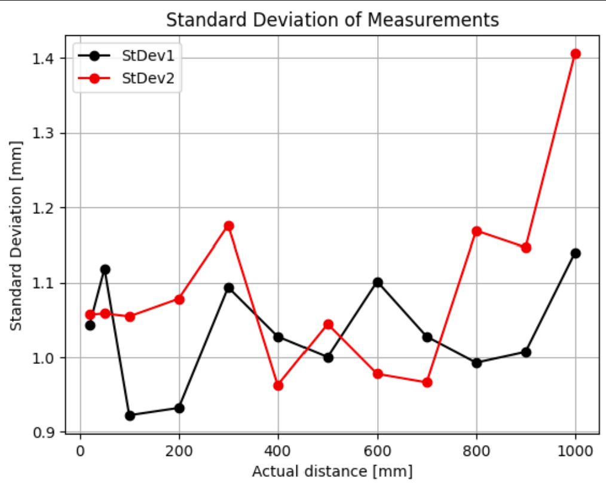The acutal vs recorded distance are very similar. Further testing should be done to confirm if StDev increases with distance as one sensor shows an increase while the second does not.
4. Fast Loop
I sped up my loop used previously to be as fast as possible. I moved the start ranging out of the loop and took out all unecescary code. I was able to send 86 data points from Arduino to Bluetooth in 5 seconds. I added an indicator to see if the TOF had new data yet. There was only a delay at the start, otherwise the TOF always had data ready. Although the TOF sensor is meant to read at a frequency of 50Hz, I am getting readings at 17Hz. The current limiting factor maybe the bluetooth communication.
Fast Loop Arduino Code:
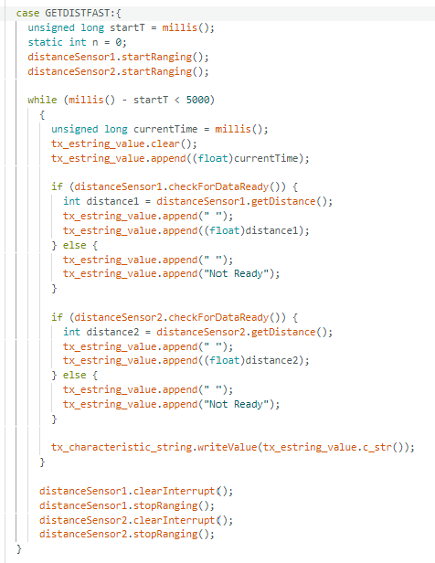Fast Loop Return in Jupyter Notebook:
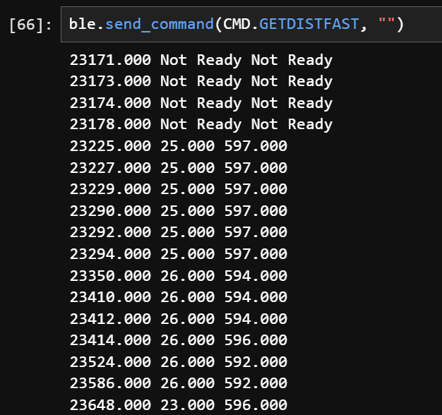5. Time-stamped TOF & IMU
Arduino Code:
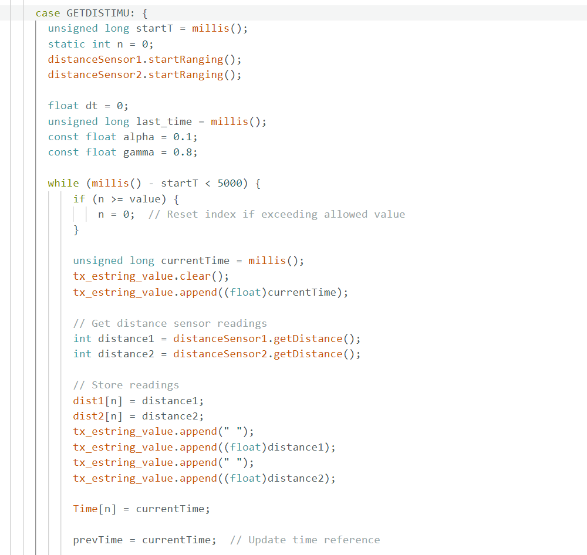 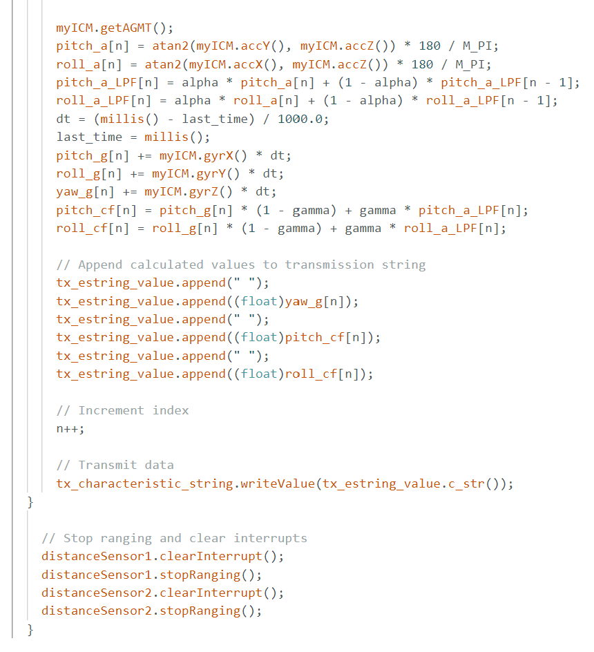Return in Jupyter Notebook (Dist1, Dist2, Yaw, Pitch, Roll):
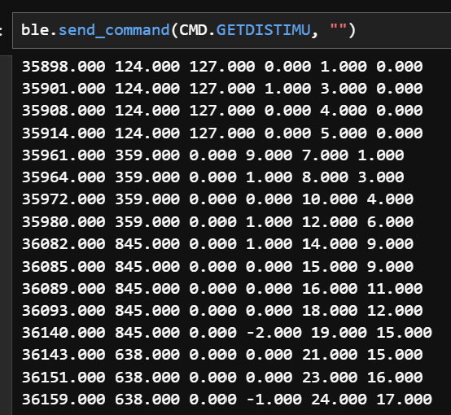Graphs of TOF & IMU vs Time for 5 sec:
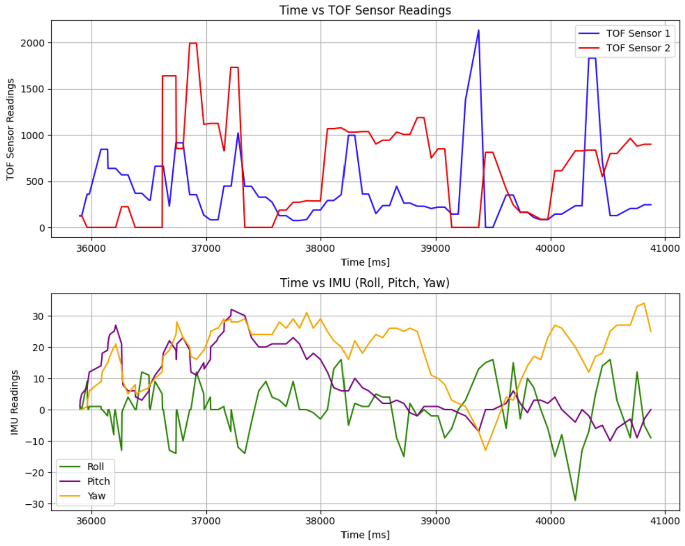Discussion
This lab made me more confidnet with integating sensors into my ble and python code. The TOF seems to be very accurate and I'm excited to see what all can be done with it's readings.